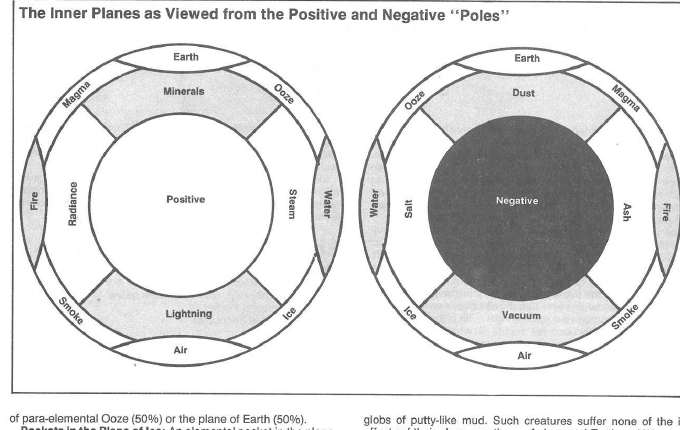

准元素位面的特征 · Features
副元素生物很少离开自己的位面，通常孤僻、敌意强且谨慎。它们会与元素领主、巨灵、原初位面旅行者进行交易，但交易常以资源、奴役或领土为代价。各个位面都有自己的强者和领主；其中烟、蒸汽、灰烬和泥的居民都可能把旅行者视为入侵者。
副元素位面之间没有绝对安全的“中立地带”。越接近边界，越容易遭遇两种元素的混合环境、突然出现的口袋和不稳定的通道。熟悉相邻位面的元素向导通常比地图更有价值。

上一节：移动、战斗与魔法 · Movement, Combat, and Magic
下一节：能量位面 · The Energy Planes